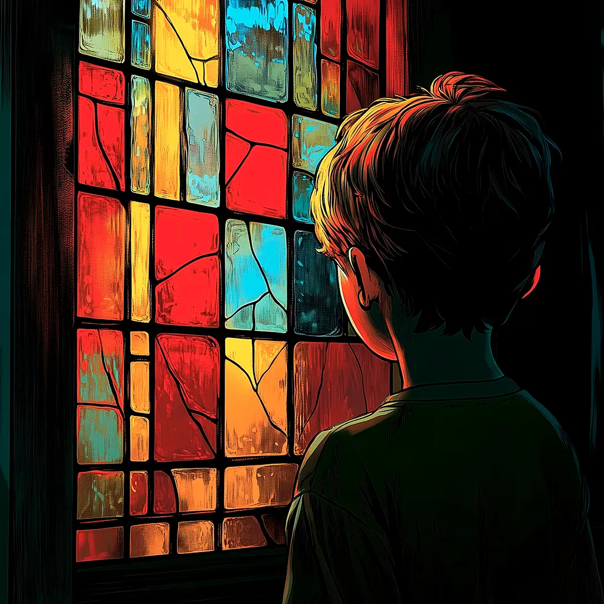

Ray Bradbury - El hombre del piso de arriba
Aventura Gráfica
Descubrí la verdadera identidad de Koberman.
Integrantes
Agustin Lasarte
Pedro Ramella

Aventura Gráfica
Click para comenzar
Descubrí la verdadera identidad de Koberman.
Click para comenzar
¿Cómo lo armamos?
Elegimos El hombre del piso de arriba según nuestros gustos y la disponibilidad de cuentos. Luego creamos el diagrama basándonos en la historia original e incorporando finales buenos y malos. En nuestra primera juntada realizamos las imágenes y armamos la estructura de carpetas, y en la segunda nos dedicamos a programar la aventura gráfica. Finalmente, con los sonidos, las imágenes y el código integrados, realizamos las pruebas del juego completo.
"El hombre del piso de arriba" - Ray Bradbury
Nuestra aventura gráfica se basa en el cuento de Bradbury, donde Douglas sospecha que el nuevo huésped no es humano, lo que lleva a un enfrentamiento cargado de tensión y misterio en la casa de su abuela.